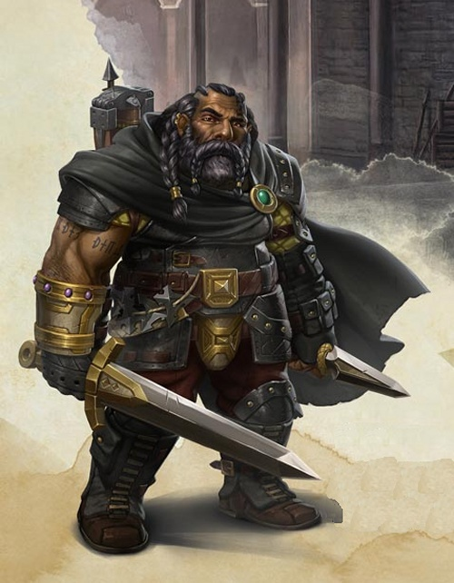

Roublard nain niv 3
Larethar Gulgrin
Roublard (voleur) 3 (900 PX)
Nain des collines (h), neutre
Criminel (cambrioleur)
[ CARACTÉRISTIQUES ]
For 12 (+1) Dex 16 (+3) Con 14 (+2)
Int 14 (+2) Sag 10 (+0) Cha 8 (-1)
[ MAÎTRISES ]
Bonus de maîtrise +2
Sauvegardes Dex +5, Int +4
Compétences Athlétisme +5, Discrétion +5, Escamotage +5, Investigation +4, Perspicacité +2, Tromperie +1 (Perception passive 10)
Armes armes courantes, arbalète de poing, épée courte, épée longue, rapière, arc court, hachette, hache d'armes, marteau léger, marteau de guerre
Armures armures légères
Outils outils de forgeron, outils de voleur, dés, outils de bijoutier
Langues commun, nain, jargon des voleurs
[ COMBAT ]
pv 27 ; DV 3d8
Init +3 ; Vitesse 7,50 m
CA 15 (armure de cuir clouté 12, Dex +3)
Épée courte. Corps à corps : +5 (1d6+3 perforant ; finesse, léger)
Dague. Corps à corps : +5 (1d4+3 perforant ; finesse, légère, lancer (portée 6 m/18 m))
Arbalète légère. Distance : +5 (1d8+3 perforant ; munition (portée 24 m/96 m), chargement, à deux mains)
[ CAPACITÉS & TRAITS ]
Expertise * (Athlétisme, Outils de voleur)
Attaque sournoise (1/tour si AV à l'attaque ou allié au contact avec une arme de finesse ou à distance) (+2d6)
Ruse (Se désengager, Se cacher ou Foncer) (+1 action bonus)
Monte-en-l'air
Mains lestes
Vision dans le noir (18 m)
Résistance naine (AV aux JdS vs poison)
Entraînement aux armes naines *
Maîtrise des outils *
Connaissance de la pierre (bonus de maîtrise x2 aux jets d'Int (Histoire) en relation avec la pierre)
Robustesse naine (+1 pv/niveau) *
Contact avec le crime
[ ÉQUIPEMENT ]
Épée courte, dague (2), arbalète légère (2), armure de cuir clouté, outils de voleur, 20 carreaux, sac à dos, pied-de-biche, marteau, piton (10), lanterne à capote, boite d'allume-feu, rations/1 jour (5), gourde, corde en chanvre de 15 m, vêtements communs, bourse
Coût de l'équipement 175.2 po ; Poids de l'équipement 36.25 kg
25 po
Poids des pièces 0.25 kg
[ PERSONNAGE ]
Taille M / 1,35 m / 75 kg ; Âge 98 ans (âge apparent 32)
Yeux noirs ; Peau matte ; Cheveux gris-argentés
Apparence Barbe et cheveux en tresses toujours bien ajustées, Larethar est bien plus adroit que fort, malgré les muscles apparents sur ses bras tatoués.
Trait La meilleure façon de me faire faire quelque chose et de me dire de ne pas le faire.
Faire de mauvaises blagues m'a mis dans le pétrin, et le fera probablement à nouveau.
Idéal Je suis fidèle à mes amis (Illydia en particulier), pas à des idéaux, et tous les autres peuvent bien s'embarquer sur le Styx, je m'en fiche.
Lien Je deviendrai un héro aux yeux d'Illydia.
Défaut Quand je vois quelque chose de précieux, je ne pense qu'à une chose : comment m'en emparer.
Passé du personnage Larethar est né dans une grande cité naine du nord où il grandit et travailla, après un passage forcé par les forges, comme joaillier pendant de nombreuses années. Très prisés dans sa communauté, les bijoux conçus par le nain se vendaient à prix fort et la noblesse de la cité s'arrachait les divers pendentifs et amulettes que façonnait Larethar. On le voyait déjà à la tête de la guilde des joailliers de sa cité. Larethar avait travaillé durant plus d'un an sur un joyau d'une grande valeur qui allait servir de dot pour la première fille du roi. Mais il s’avéra que le prétendant n'était nul autre que le fils aîné d'une famille de marchands de la pire espèce. Sachant que sa création finirait dans les mains de ce nain montagnard, Larethar ne put l'accepter et décida de faire main basse sur le bijou avant que n'ait lieu la cérémonie du mariage. Les dirigeants de la guilde et la garde réalisèrent rapidement que Larethar était le coupable, mais le nain avait déjà prit la fuite.
Arrivant dans une grande ville de la côte, le nain se joint à une guilde de voleurs. Le nain apprécia le vol, qu'il voyait comme un bon moyen de s'enrichir rapidement, souvent aux dépens de gens qu'il jugeait indignes de posséder de telles richesses. En fait, dès que Larethar avait le malheur (ou le bonheur) de tomber sur quelque chose de précieux, il ne lui fallait pas longtemps pour mettre tout en œuvre et s'en emparer. Ceci lui valu l'estime de ses compagnons criminels qui savaient qu'on pouvait compter sur lui, malgré ses blagues de mauvais goût et son tempérament bouillant. Il n'était d'ailleurs pas rare que le nain se retrouve mêlé à des rixes de tavernes et à des règlements de malentendus à grands coups de poings, dus le plus souvent à son sens de l'humour assez douteux. Un jour, Larethar envoya promener un chef de bande rivale et s'en suivit une guerre de territoire qui dura plusieurs mois et où, d'un côté comme de l'autre, de nombreux brigands et voyous perdirent la vie. Lorsque les hostilités prirent fin, il fut décidé que le nain serait éliminé. Heureusement pour lui, Larethar réussit à éviter deux tentatives de meurtre, l'une par empoisonnement et l'autre par un assassin. Le voleur décida alors de s'exiler et, une fois de plus, il se retrouva sur les routes du monde des hommes.
Sa cavale dura quelques mois, puis il finit par tomber sur une elfe qui allait changer sa vie. Illydia Maethellyn, que le voleur rencontra presque par hasard, réussit à le convaincre de la suivre pour l'aider dans sa quête et répandre le message de son dieu. La dichotomie du bien et du mal n'avait jamais réellement fait partie des sujets de cogitation de Larethar, mais cette elfe, qui avait toujours les mots justes, dû à sa grande sagesse, réussit à convaincre le nain de l'accompagner dans ses voyages, du moins pour un temps. L'humilité de l'elfe et ses talents de combattante eurent tôt fait d'impressionner le brigand qui finit par la tenir en très haute estime. Était-ce de l'amour ? On ne pourrait le dire, mais Larethar Gulgrin voue une admiration sans borne à sa nouvelle compagne et entend bien un jour ou l'autre lui prouver qu'il est à la hauteur.
Stat de WotC, histoire de Maitre Menator